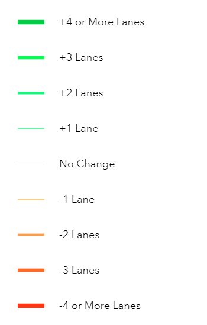
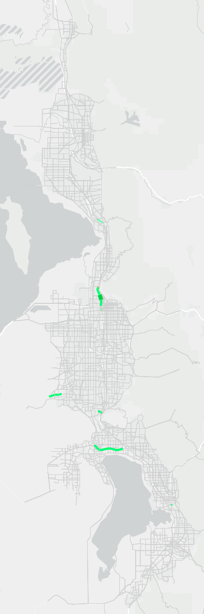

| Plan Phase (2023-2050) | Assumptions | Field Calculation | Field Calculation (Additional) |
|---|---|---|---|
| Phase 1 Fiscally Constrained | 15/30, POTM Station, Payson Extension | TSPD23_32 = TRNSPD_FF1 | Provo to Payson (TSPD23_32 = TRNSPD_FF2) |
| Phase 1 Needed | 15/30, POTM Station, Payson Extension | TSPD23_32U = TRNSPD_FF1 | Provo to Payson (TSPD23_32U = TRNSPD_FF2) |
| Phase 2 Fiscally Constrained | 15/30, POTM Station, Payson Extension | TSPD23_42 = TRNSPD_FF1 | Provo to Payson (TSPD23_42 = TRNSPD_FF2) |
| Phase 2 Needed | 15/30, POTM Station, Payson Extension, Electrification | TSPD23_42U = TRNSPD_FF3 | |
| Phase 3 Fiscally Constrained | 15/30, POTM Station, Payson Extension, Electrification | TSPD23_50 = TRNSPD_FF3 | |
| Phase 3 Needed | 15/30, POTM Station, Payson Extension, Electrification | TSPD23_50U = TRNSPD_FF3 |
Changes to Input Files
Highway Network
Changes to Highway Network Due to Amendment #1:
The following edits were made to the highway network to account for Amendment #1:
- A HOT Lane on I-15 from Farmington to 2600 S was converted to a general-purpose lane (4 GP + 2 HOT 5 GP + 1 HOT) as a direct result of the EIS (section R-D-45)
- Highway network attributes were also updated in all phases of the plan to accommodate additional passing lanes for the operational project on I-15 in Box Elder from US-91 North to 3000 N
- Updated 12600 S from 6400 W to Bacchus Highway to 5 lanes
- Added Freedom Point Way from 100 W to Pony Express Rd (3 lanes)
- Removed lanes in 2023 and 2028 from Granville Ave from Old Bingham Highway to 10200 S
- Fixed HOT23_32 through HOT23_50UF fields to correctly reflect the RTP projects and Amendment from Farmington to the Utah/Salt Lake County Line
- Fixed auxiliary lane FT on I-15 from Farmington to 400 S in Salt Lake
- Added new underpass north of 2600 S in North Salt Lake/Bountiful
- Added new configuration at 1000 N to 600 N interchanges on I-15
- Altered Davis-SLC Community Connector from 400 W to 300 W
- Added Maker Way to accommodate for the Farmington Station circulator
A summary of the specific edits done to the link and nodes (in comparison to v901-patch2) are shown below:
Links
- No new links were added to the highway network
- Over 300 links had at least one field variable updated (i.e. lanes, functional type, street name distance, direction)
- 30 links where the LINK_ID attribute was renamed to point to a different node (24 in Salt Lake County, 4 in Utah County, 2 in Weber County)
Nodes
- No new nodes were added to the highway network
- 7 nodes were repositioned (5 in Salt Lake County, 1 in Utah County, 1 in Davis County)
The following figures show the lane and functional type coding differences between version 9.0.2 and version 9.0.1-patch2. Differences are shown at the segment level.




Changes to the Highway Network Rail Component
Amendment #1 led to the following updates to the highway network’s rail component:
A new Bluffdale commuter rail station was added at the former point of the mountain prison site (this included updating the rail speeds to/from this station)
FrontRunner speeds were adjusted to match UTA’s FrontRunner Forward study. Phases and speed changes are outlined in Table 1.
The following 6 transit speed fields corresponding to the 6 phases of the FrontRunner Speed Study were added to the highway network as a reference (information regarding the process for determining the transit speeds based on the FrontRunner Speed study can be found in the
CRTSpeedSummaryFile.xlsxlocated in theInputs/Transitfolder):- TRNSPD_FF1
- TRNSPD_FF2
- TRNSPD_FF3
- TRNSPD_FF4
- TRNSPD_FF5
- TRNSPD_FF6
A comparison of the FrontRunner speeds and travel time savings between versions 9.0.2 and 9.0.1-patch2 are found in Figure 5. The difference in speeds results in a savings of 10 to 15 minutes along the entire route in 2032 and 2042. In 2050, the difference in speeds results in a time savings of 26 to 33 minutes.
Code
Code
Code
Added Network QA-QC Folder
In the 1_Inputs/3_Highway/_Network Processing Tools folder, the Network QA-QC folder was added containing new Jupyter Notebook files. The 0-Network-QA-QC-Process.ipynb describes a process for verifying the quality of the highway network, segment shapefile, and transit networks before running/releasing a new version of the model. The 1-Network-QA-QC-Checks.ipynb is a placeholder for the future checks that will be programmatically made. However, for now, this file is empty.
Transit Networks
Changes to Transit Line Files Due to Amendment #1
The following edits were made to the transit network to account for Amendment #1:
- Added a shuttle service at the Point of the Mountain in Phase 1 of the RTP
- Replaced BRT with LRT through the Point of the Mountain in Phase 2 of the RTP
- Added a new shuttle service at the Farmington Transit Station
- Added Bluffdale commuter rail station
With the Amendment #1 edits, transit projects crossing the border between Salt Lake and Utah counties are now consistent between WFRC and MAG’s unfunded need project lists.
Minor edits were made to the transit line files to ensure consistency with the changes made to the highway network.